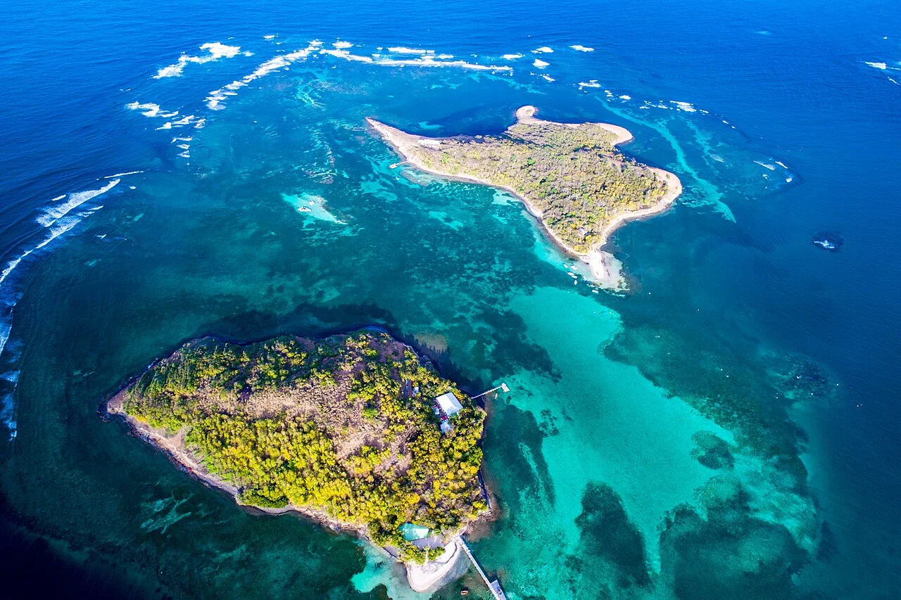

Baignoire de Joséphine — Le François
Baie du François, Martinique · baignade, snorkeling

Haut-fond de sable blanc dans la baie du François, entre l’îlet Oscar et l’îlet Thierry. Martinique Tourisme en fait le Fond Blanc le plus célèbre de l’île : l’eau est claire, chaude et très peu profonde, et on a pied en pleine mer. On y va en bateau ou en catamaran, pour se baigner ou nager avec masque et tuba. La saison sèche court de décembre à mai environ.
- Lieu
- Baie du François, Martinique
- Niveau
- Variable selon les conditions
- Activités
- baignade, snorkeling
- Type d'eau
- Mer / océan
- Coordonnées
- 14.63, -60.85 (position approximative du secteur)
Dangers à connaître
- On ne rejoint les Fonds Blancs qu’en bateau ou en catamaran.
- Les Fonds Blancs sont fragiles : suis les consignes des guides pour les préserver.
- Le soleil tape fort sur l’eau : lunettes, chapeau et crème solaire biodégradable.
- Les sargasses touchent la façade atlantique de la Martinique : en 2025, les premières arrivées datent de décembre 2024, selon Météo-France Martinique. Regarde son bulletin avant de partir.
Le conseil d'Ocean Buddy
Prends des chaussures d’eau pour marcher sur les fonds et une crème solaire biodégradable, et suis les consignes des guides.
Ouvrir dans Ocean Buddy Télécharger sur l'App Store
Source : Fiche Ocean Buddy · décembre 2026 · d’après Martinique Tourisme et Météo-France Martinique · à vérifier localement.